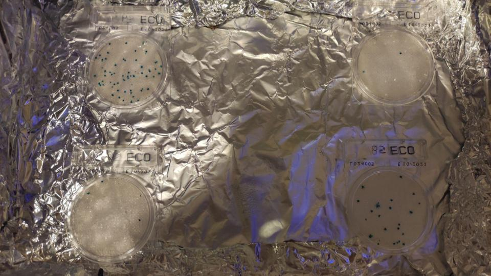

Escherichia coli
Cos’è Escherichia coli
Escherichia coli è un batterio a forma di bastoncello che cresce nella parte inferiore dell’intestino di animali a sangue caldo (batterio fecale). E. coli è necessario per la digestione corretta del cibo grazie alla capacità di fermentare il lattosio. Non si riproduce al di fuori del tratto gastrointestinale di animali a sangue caldo.
Strumenti da utilizzare per il monitoraggio
Per svolgere la misura occorrono:
strumenti monouso:
contenitore sterile per prelevare il campione (1 per ogni stazione di campionamento): bottigliette d’acqua da 500ml, contenitore per le urine o bottiglie sterili da laboratorio;
2 piastre per stazione di campionamento (quindi per 8 punti di prelievo -> 16 piastre);
1 siringa da insulina da 1 ml per ogni campione;
1 siringa da 10 ml;
1 contenitore sterile (per esempio quello per le analisi delle urine) per ogni campione + 1 o anche una bottiglietta d’acqua;
acqua distillata;
2 lampade a infrarossi da rettilario (max 60W per l’estate e tra 70W e 100W per l’inverno);
una scatola di scarpe rivestita con fogli di alluminio (carta stagnola) e poi forata in alto al centro (il foro deve essere del diametro della lampada a infrarossi);
supporto per la lampada a infrarossi (deve rimanere sospesa a 10/15 cm dal foro);
foglio di polistirolo;
termometro digitale con sonda;
pennarello indelebile.
Procedimento
Per questo tipo di analisi, pur essendo stati sviluppati metodi e kit specifici per attività di citizen science, richiedono un livello di esperienza ed impegno superiori rispetto ai precedenti monitoraggi.
SUL CAMPO:
- scrivere sul tappo e sulla bottiglia il numero della stazione di campionamento con un pennarello indelebile;
- prelevare il campione con il contenitore sterile stando attenti a non contaminare il campione (aprire il tappo a ridosso del prelievo e richiudere subito il contenitore; se si usa la bottiglietta d’acqua meglio aprirla sul punto di campionamento, versare l’acqua in una borraccia senza bere dalla bottiglietta e stando attenti a non far entrare in contatto la bottiglia e la borraccia);
A CASA:
preparare la scatola di cartone, posizionarla sul polistirolo, posizionare e accendere la lampada (così si inizierà a scaldare mentre si preparano le piastre);
aprire e posizionare le piastre (2 per ogni campione) segnando su una il numero del campione e sull’altra il numero + la lettera ”D” che sta per diluizione (per esempio: 8 e 8D) con un pennarello indelebile;
versare l’acqua distillata in un contenitore per le urine e richiuderlo subito;
prendere il contenitore con il campione d’acqua e agitarlo per fare in modo che quanto contenuto si distribuisca in maniera uniforme;
prelevare 1 ml di campione puro con una siringa di insulina e richiudere subito la siringa;
aprire la piastra con il numero senza la lettera “D” e iniettare il campione al centro, richiudere subito la piastra;
preparare il campione diluito:
con la stessa siringa usata per il campione puro, prelevare 0,9 ml di campione e versarlo in un contenitore per le urine;
con la siringa da 10 ml, prelevare 10 ml di acqua distillata e metterla nello stesso contenitore con i 0,9 ml di campione. Richiude subito la siringa da 10 ml così da poterla usare per la diluizione degli altri campioni;
con la siringa da insulina: mescolare campione e acqua distillata alzando e premendo lo stantuffo della siringa più volte, poi prelevare 1 ml di campione e metterlo nella seconda piastra (quella segnata con numero + lettera “D”).
RIPETERE PER TUTTI I CAMPIONI
capovolgere le piastre e metterle una sopra l’altra creando 2 o 4 colonne ( a seconda del numero di piastre);
inserire nella scatola le piastre (capovolte e impilate), posizionandole a metà dello spazio tra il foro e il bordo della scatola.
chiudere la scatola e non riaprirla per 24 ore;
inserire la sonda del termometro digitale (fare un foro nella scatola di cartone del diametro esatto della punta del sensore della sonda e utilizzarlo per introdurre la punta del sensore);
monitorare che la temperatura sia sempre di 36 +/- 2 °C;
aprire la scatola dopo 24 ore;
contare e trascrivere le unità formanti colonie (UFC). Saranni visibili come pallini blu all’interno delle piastre;
moltiplicare il valore x 100 (poiché l’unità di misura utilizzata è UFC/100 ml) e si otterrà il dato finale. Esempio:
56 UFC / 1 ml
56 x 100 = 5.600 UFC/100ml
Quali sono i rischi associati ad alti valori di Escherichia coli?
L’Escherichia coli è una specie batterica composta da numerosi ceppi diversi, tra cui due patogeni, ed è considerato un ottimo indicatore di inquinamento organico, in particolare di contaminazione fecale recente. Poiché l’escherichia coli non può riprodursi all’esterno del sistema gastrointestinale di organismi a sangue caldo la sua presenza nei corpi idrici segnala la presenza di inquinamento fecale (è il principale indicatore di contaminazione fecale, insieme con gli enterococchi). Come specificato precedentemente, con la sostituzione del LIMeco al posto del LIM, tale parametro non è più un indicatore dello stato di qualità dell’acqua per lo stato ecologico. Tuttavia per avere delle indicazioni sui suoi limiti si può specificare che il limite per la balneazione nelle acque fluviali è di 5000 UFC. Si specifica anche, per avere un elemento di comparabilità, che valori superiori a 5000 UFC fanno sì che si rientri tra la III° e la IV° classe di LIM, definita di qualità “scarsa”.